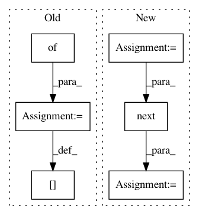

b523b464d8cafe29e352981c1c6df941f205592a,nilmtk/metrics.py,,mean_normalized_error_power,#Any#Any#,109
Before Change
mne = {}
numerator = {}
denominator = {}
for appliance in predicted_power:
numerator[appliance] = np.sum(np.abs(predicted_power[appliance] -
df_appliances_ground_truth[appliance].values))
denominator[appliance] = np.sum(
df_appliances_ground_truth[appliance].values)
mne[appliance] = numerator[appliance] * 1.0 / denominator[appliance]
return mne
def rms_error_power(predicted_power, df_appliances_ground_truth):
After Change
ground_truth_meter_identifier = meter.identifier._replace(
dataset=ground_truth.dataset())
ground_truth_meter = ground_truth[ground_truth_meter_identifier]
sections = meter.good_sections()
sample_period = meter.sample_period()
period_alias = "{:d}S".format(sample_period)
// TODO: preprocessing=[Resample(sample_period)])
pred_generator = meter.power_series(periods=sections)
total_diff = 0
sum_of_ground_truth_power = 0
while True:
try:
pred_chunk = next(pred_generator)
except StopIteration:
break
else:
truth_generator = ground_truth_meter.power_series(
In pattern: SUPERPATTERN
Frequency: 3
Non-data size: 6
Instances
Project Name: nilmtk/nilmtk
Commit Name: b523b464d8cafe29e352981c1c6df941f205592a
Time: 2014-07-09
Author: jack-list@xlk.org.uk
File Name: nilmtk/metrics.py
Class Name:
Method Name: mean_normalized_error_power
Project Name: theislab/scanpy
Commit Name: 315859c5586116434ea3b7ce97512a5e2a1030e2
Time: 2017-02-06
Author: flying-sheep@web.de
File Name: scanpy/exs/builtin.py
Class Name:
Method Name: moignard15_raw
Project Name: theislab/scanpy
Commit Name: 49899ef69309d2a0ab6ad785f455eb53a8443a06
Time: 2017-02-08
Author: f.alex.wolf@gmx.de
File Name: scanpy/exs/builtin.py
Class Name:
Method Name: moignard15_raw